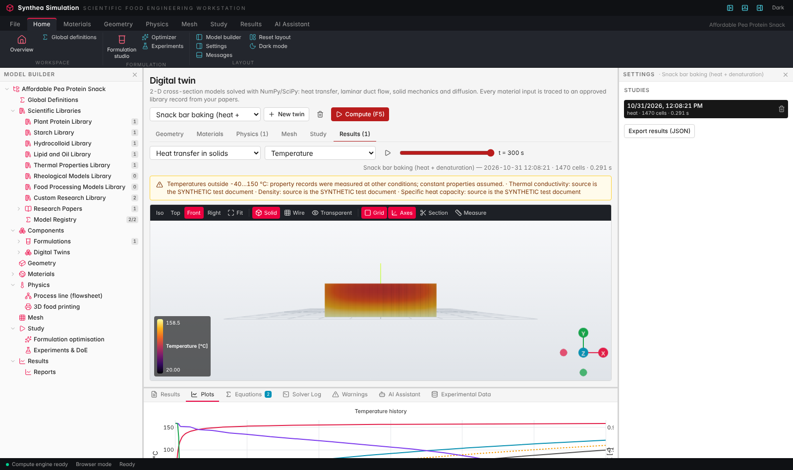
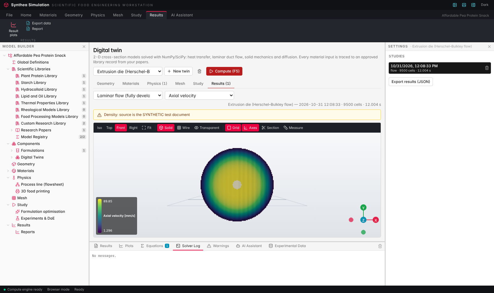
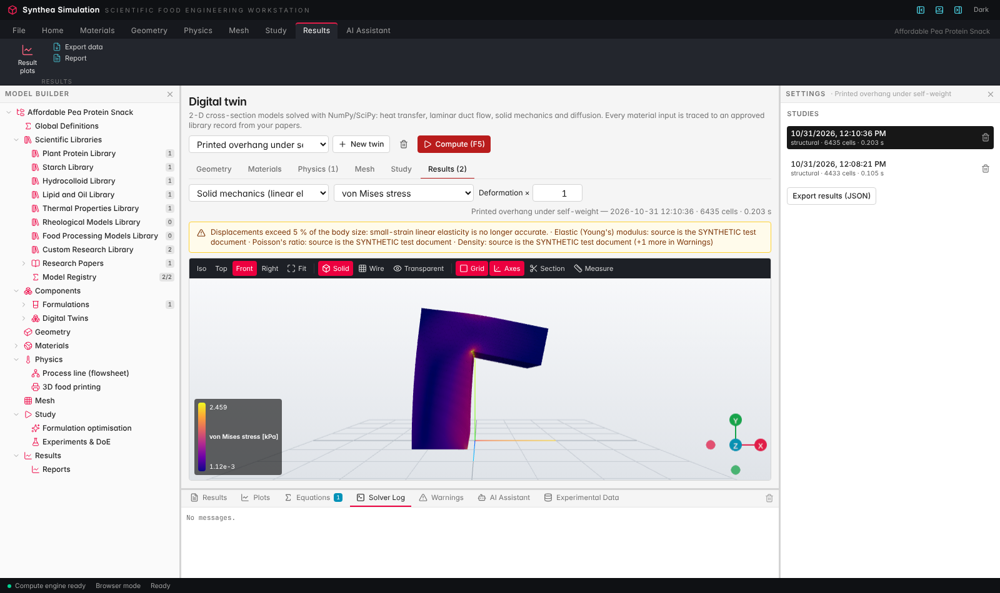
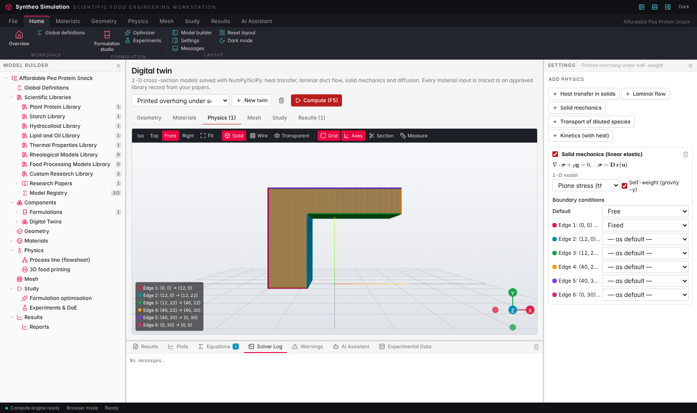
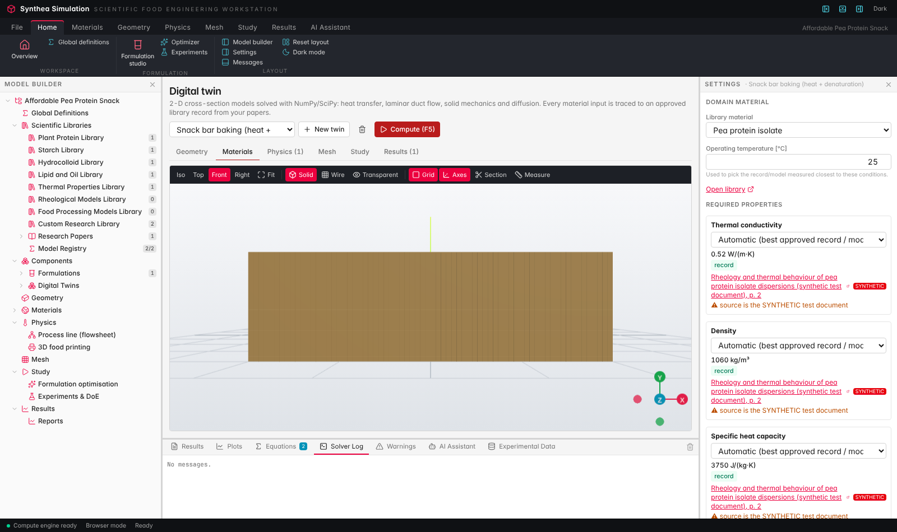
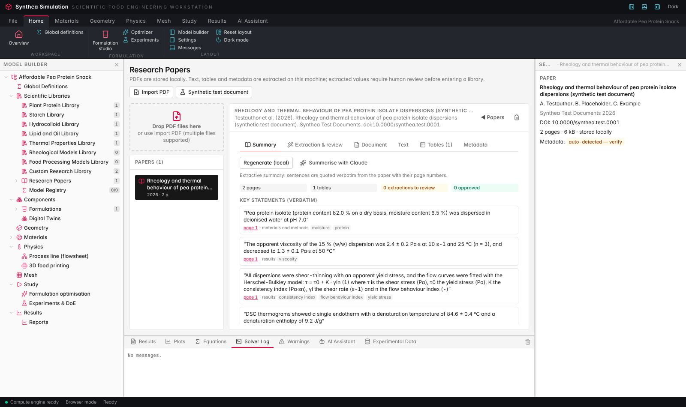
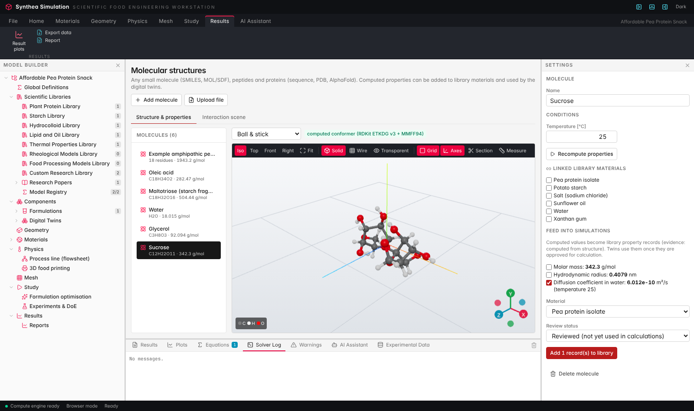
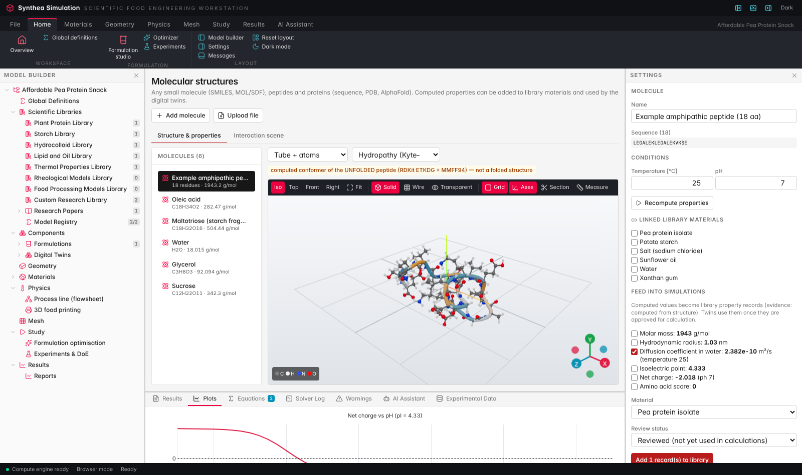
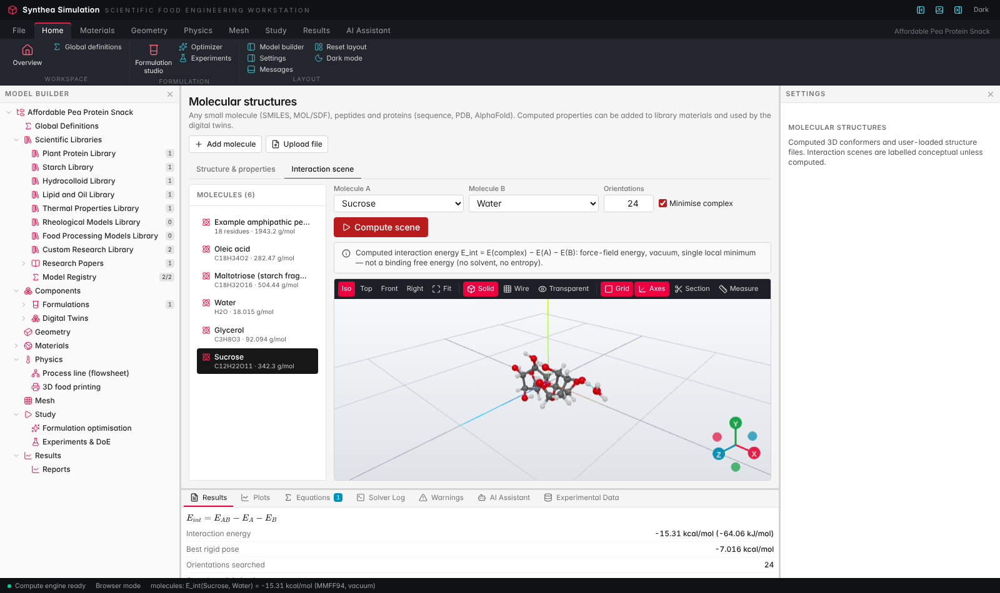

ali · 31 Oct 2026These are the two milestones the team chose to tackle first: R8 digital twin, then R7 molecular structures. Along the way, paper summaries were added so that libraries built from uploaded research papers can feed both of them. Everything is built on development and pushed to ali.
A library works like a folder. You upload research papers into it, the app extracts the values and summarises each paper, and a person reviews and approves the values. The digital twin reads only those approved records, and every input links back to its paper and page. The molecule viewer computes properties such as diffusion coefficient, isoelectric point and amino-acid score, and writes them into the same libraries so the twins can use them too.
PDF papers ──► extraction + summary ──► human review ──► library records ──► digital twin (2-D solvers)
▲
molecules (SMILES, sequence, PDB) ──► computed properties ────┘
| # | Question | Decision | What was built |
|---|---|---|---|
| 1 | Solver approach | 2-D, NumPy/SciPy | Finite volumes and Q4 finite elements on a uniform grid, solved with SciPy sparse solvers |
| 2 | Geometry | Simple shapes first; the user can change them | 8 shapes including a free polygon; editable dimensions and depth |
| 3 | Physics | Heat, fluid flow, structural | Heat (+ denaturation kinetics), Herschel–Bulkley duct flow, plane stress/strain elasticity, plus diffusion |
| 4 | Material data | Users build libraries from their own papers; app extracts and summarises | Twins use approved records only; paper summaries quote sentences verbatim with page numbers |
| 5 | Calibration | Out of scope | Not built; twins read uploaded PDFs only |
| 6 | Long runs | Background jobs | Progress bar, cancel, live Solver Log, stored studies |
| 7 | Mesh / view | 3-D | Extruded 3-D body coloured by the field; mesh wireframe |
| 8 | Molecules' purpose | Feed numbers into simulations | Computed values become library records that twins use |
| 9 | Which molecules | All | SMILES, MOL/SDF, sequences, PDB files, RCSB / AlphaFold downloads |
| 10 | Viewer | Either option | In-house Three.js viewer, consistent with the rest of the app |
| 11 | Interaction scenes | Required | MMFF94 energies for small-molecule pairs; protein scenes labelled conceptual |
| 12 | Molecule ↔ material links | Yes | Links stored on the molecule; records written to the material |









| Solver / calculation | Reference | Result |
|---|---|---|
| Transient heat conduction | Fourier-series slab solution | max error 0.02 K |
| Newtonian duct flow | Hagen–Poiseuille | 0.4 % on Q |
| Power-law duct flow | Analytic pipe flow | 0.8 % on Q |
| Herschel–Bulkley duct flow | Existing analytic HB module | 1–2 % on Q |
| Flow force balance | τ̄w·P = G·A | 1e-14 relative |
| Elasticity, uniaxial compression | σ = −p, u = pH/E | exact |
| Water viscosity (Vogel) | 0.890 mPa·s at 25 °C | within 2 % |
| Sucrose diffusion (Stokes–Einstein) | measured ≈ 5.2e-10 m²/s | 6.0e-10 m²/s |
e2e/demo-walkthrough.mjs has failed on development since the R1 redesign. That predates this branch.docs/DESIGN_DECISIONS_ALI.md: the decisions abovebackend/app/twin/: geometry, solvers, inputs, demobackend/app/molecules.py, paper_summary.py, jobs.pyfrontend/src/pages/Twin.tsx, Molecules.tsxgit fetch origin ali && git checkout ali ./scripts/dev.sh # backend :8000, frontend :5173 # Digital twin page → "Load demo twins (synthetic test data)" → Compute (F5) cd backend && .venv/bin/pytest -q # 59 tests node e2e/twin-molecules-smoke.mjs # 6/6 checks, needs the running app